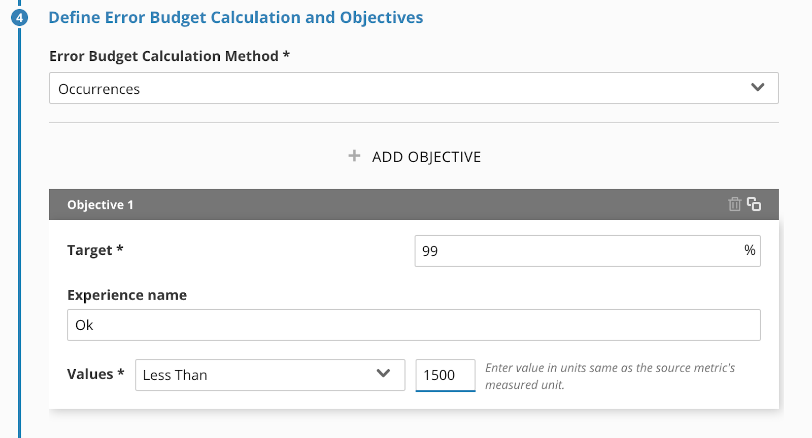

In this lab you will learn about:
Oh and one more thing, thanks for coming to SLOConf. We are so grateful that you are taking the time to connect with the community! Please feel free to share your Lab experience with others! Finally, if you enjoyed the contents of this lab be sure to drop a line to our friends at Isos Technology.
Let's get started!
If you're new to SLO and how it relates to SRE, please watch this short introductory video on why SLO is important and whyt it's exciting.
In this longer video you'll learn the method at a logical level, behind the math and computer science that drives SLO. You'll also learn why Nobl9 built the Nobl9 platform.
How do we tie our reliability objectives to how satisfied the customer is? How would it change how we work if we stopped focusing on how reliable we can make individual systems? These systems combined, make up our product and we need to get smart about how all of our systems affect customer happiness.
s
Reliability is a function of customer happiness. But SLAs measure total dissatisfaction at a contractual level. The A stands for Agreement, as in a legal contract with money and significant negative strategic (reputation) and tactical (wasted work) effects. What happens when we also use reliability objectives tied to customer happiness? We call these Service Level Objectives (or SLOs).
Using an SLO and an Error Budget is relatively easy, conceptually. Monitoring and refining this approach is harder work.
The Nobl9 platform was created to help teams do this harder work.
Using an Error Budget has a some other benefits, (we won't have time to cover all of these in the lab today):
Thinking about the work as a function of Customer Satisfaction, take a look at these two diagrams. In this example we're going to focus on a "Narrow" time context SLO technique. Without SLOs both of these incidents are bad, but they are not at all the same.
The Good one looks like it's going to be very easy to A) Identify the root cause B) Communicate with the organization how customer happiness was affected and how we responded.
But why is the first one bad?
It's bad because the customer happiness impacts are not very informative. We spent just as much error budget (the customer was dissatisfied just as long), but when we think about reliability this way:
We don't have enough information to determine which part of the product was causing the customer to be unhappy.
Why is the time scope indicating the customer was unhappy the whole time, when the SLI is frequently jumping up and down so much. Do we need to "fix all the things"? Maybe not.
Without using SLO and Error Budgets, the frequency of reliability metrics don't associate Customer Happiness with how multiple systems and external factors interact to deliver a reliable customer experience.
For example, if a combination of systems are slightly degraded about every fifteen minutes, and that combination completely degrades the customer experience without any of the systems themselves appearing to be "unreliable", how would we know? Once we know, how would we be able to tell when product reliability is "barely met" if we can't see when they were not met?
With a tool like Nobl9 we can use a narrower time frame, one minute to many months, to decide how our system metering should "spend" the error budget.
Our customers, control our error budgets and they WANT you to deplete them. Your customers are telling you that they can be inconvenienced if you pay very close attention to how they use your product, and when they stop paying attention to your product.
We can also compare trends in customer reliability over much longer time frames (quarters and years). Let's focus on the narrow time frame.
Using a very narrow time frame to consume our error budget, ensures we are identifying the root causes of reliability impacts that customers care about. More importantly it informs our work to improve reliability in the context of more accurately understanding our customer reliability expectations.
With this approach we can get very specific and transparent about how much reliability is considered "reasonable" to our customer. The product team, and even the customers, are all on board with making sure we agree what different levels of customer happiness really are which improves trust.
Which brings us back to our statement:
When we use SLOs and Error Budgets we can also:
We've prepared the lab environment with example services and SLOs to get you started.
You, and all our other Lab participants, use these as references so please do not edit the SLOs in each of the example services.
(This oath will make sense after you do the next bit, it's pretty fun.)
Step One: Select a Service
Go to step two by clicking on the Step 2 Heading (this is how you navigate all the steps, and you can jump back and forth if you missed something or need to go back and change something).
Step Two: Select a Data Source and Metric
SELECT percentile(duration, 95) FROM SyntheticCheck WHERE monitorName = 'yahoo' TIMESERIESStep Three: Defining Time Window
Step Three: Define Error Budget Calculation and Objectives

Step Four: Add Name, Alert Policy
Notice you can add multiple Alert Policies. We'll talk about why that's important in the View Alert Configuration interface part of this lab.
Click Apply in the lower right.
And really, we're pretty opinionated about this because the best part of Nobl9 is how it does SLOs the way they are meant to work.
We're not going to configure any alerts in this lab, but feel free to click around without saving/modifying anything in the Alerts. Thanks!
Using a similar step by step process you saw when you created your first SLO, you can see how we create an Alert. Let's go ahead and look at the Interface.
Your configuration screen should look like this.
The first step, Define Alert Condition, is really the critical configuration and it's pretty light in terms of the amount of data it asks for. It's kind of surprising, isn't it. It's very important that you notice this simplicity because this is where the flexibility of Nobl9 really shines.
Our alerts can be tied to one or multiple error budget evaluations. These alerts are proactive webhooks to lake your team(s) awakre or trigger automation before the error budget is exhausted.
This is the part we're really excited about, and it's just a lot of wicked smart (ahem, very well tested) math.
From an SLO based SRE perspective you only need alerts when your error budget is
From an alert in perspective, you now are empowered with the ability to be alerted when customers are actually impacted. What if your incident response team was only alerted on trends and spikes directly related to customer happiness? And, what if those alerts are only related to a cumulative burn down of how much unreliability we have before our typical customer stops paying attention to our product completely.
That's why the Alert Configuration interface is so simple to configure.
Nobl9 dynamically calculates the Error Budget as it receives the data. If you are using a rolling time window, as is often the case, when customer happiness is rising, the Error Budget is replenished. Your customers can be at varying levels including ecstatic beyond their wildest dreams, pretty satisfied, and very dissatisfied.
The Error Budget is how we can more easily see the problems that are affecting customer satisfaction. Without an SLO we don't have a target level of reliability. And without a measurable level of unreliability we can't make changes with knowledge of where we stand with our level of service. We can find a balance between the floor dissatisfaction, and the ceiling of 100% reliability. If we know how to find that balance, we can also balance how many new features and how many site reliability improvements we can make in the near term and the long term.
We can improve the product by adding new features and improve reliability at the same time.
Q: So where is the Error Budget? If you can configure the Alert, there must be a total error budget, right?
A: The error budget is calculated based on SLO objectives being applied to incoming SLI data. When we created our first SLO, we only created one actual Objective. We only tied it to one Alert, but we could have created multiple objectives and applied multiple alert policies. Alert policies examine the error budgets of the SLOs to which they have been applied.
One of the common misconceptions is that SLOs are attempting to replace your common monitoring. While SLO based alerts can help reduce alert fatigue by allowing you to eliminate the non-customer impacting event alerts, the goal is not to replace your current monitoring. SLOs work in tandem with your current tools. That being said they can help expose things your monitoring can't....
Let's say you have a website, under typical monitoring you might have an SLI for web page latency. Now you don't want an alert for every time it happens, so typically a duration is put in place before the alert is triggered.
You know that customers will not tolerate load times that take over 500ms and are unhappy if it is worse than that.
In your monitoring you have an alert if less than 90% of page loads are under 500ms for 1 minute send an alert
In Nobl9 you have SLOs looking at the same latency over the past 28 days. Latency SLOs can have more than one objective as we have discussed. You have an SLO objective of 90% loads under 500ms, but also 95% of loads under 750ms and 99% of page loads under 1000ms.
Q: How do the different tools treat a constant status where 91% of the page loads are under 500ms for the last 28 days ? and what if this 9% was experiencing over 1000ms
A: The monitoring tool would assume that everything was perfectly fine. Nobl9 would be tracking your error budget and let you know that your SLO was at risk visually and / or via an alert. This would be reflected in the 90% SLO objective as error budget being burnt. It would also be able to track that some of your users were experiencing that very poor 1000ms much earlier in the 99% SLO objective. You can now capture the capture both the typical user experience and the long tail of bad experience
Usually teams like to see the math play out. Agreeing on your first SLO's and Alert policy configuration just starts you on the journey of having an Error Budget driven SRE profile for customer happiness. The real, and very effective work is beginning a more pragmatic dialog between the Service owners and the product teams on what we're learning about how our monitoring systems are surfacing steps that move us into a position where the Error budget stops alerting us with things that have to be addressed right now all the time.
Usually teams start working on really attacking the systems that were causing very slow burn or very spiky reliability issues, because they can now see what parts of those systems are contributing to customer satisfaction.
The first few weeks can be pretty giddy, but it's also the beginning of improving your SLO and Alerting configurations.
Then you really get the whole picture. Model the objectives to map to a customer satisfaction tiered scale. When customers are just barely satisfied, you can be working on planned work to get them to the next level up. What's always fun is when we get the model accurate enough that you realize your SLOs are providing better incident response signals then you've ever had before.
We've got some ways you can modify the SLO you created earlier, in the next module.
Go ahead and play around with the interface.
If you want to tweak what you did in the lab exercises, we have some suggestions in the next module.
This is the end of the guided lab!
Congratulations!
These are some other ideas to get you thinking about how you can play with the SLO configurations connected to our sample SLI monitoring data sources.
For the Objective you created in this Lab here are some alternate configurations to play with:
Try adding a threshold of 2000, or 30000, with a different target percentage experience name.
SELECT percentile(duration, 95) FROM SyntheticCheck WHERE monitorName = 'yahoo' AND locationLabel='San Francisco, CA, USA' TIMESERIES
SELECT percentile(duration, 95) FROM SyntheticCheck WHERE monitorName = 'yahoo' AND locationLabel='Washington, DC, USA' TIMESERIES
SRE - Service Reliability Engineering, the practice of designing and maintaining a system from a reliability perspective. Usually measured in terms of how a services availability, responsiveness and (blah blah) are compliant with reliability targets.
SERVICE LEVEL OBJECTIVE (SLO) - An SLO is used to prioritize and decide how much effort to invest in activities that improve customer happiness. They are not only used for SRE but they are very important to SRE.
CUSTOMER HAPPINESS A tiered measure of how happy or unhappy a customer is with the reliability of a product (not the systems that deliver the product).
ERROR BUDGET Specifically, and under what conditions do we all agree: How much Customer Happiness we are willing to sacrifice so we can continuously improve our entire product.